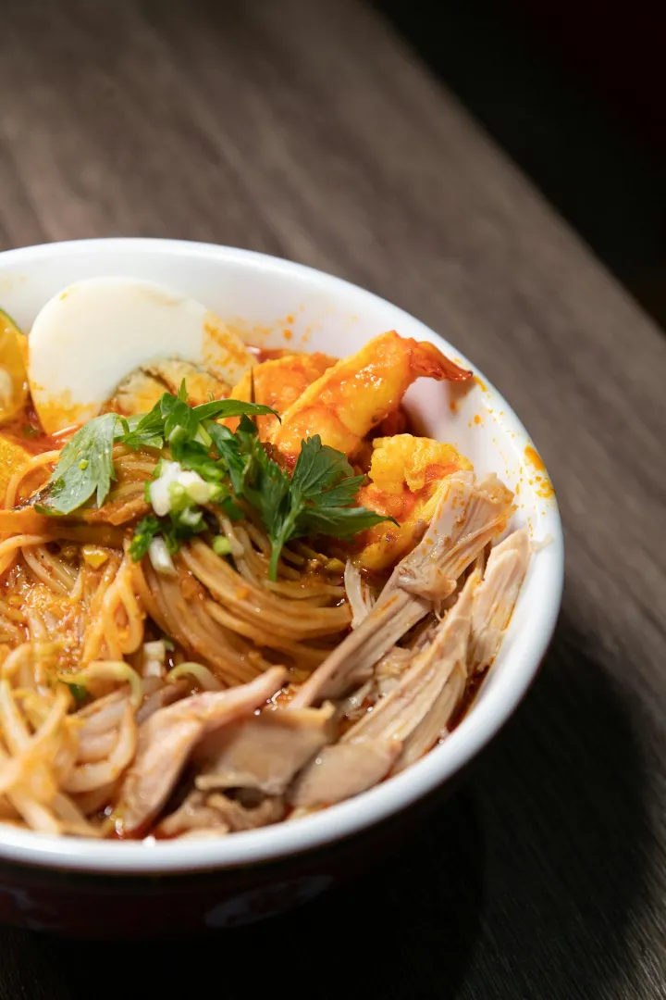
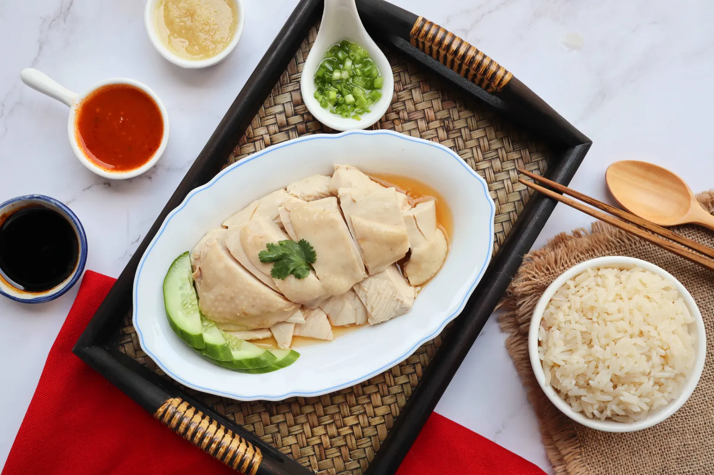
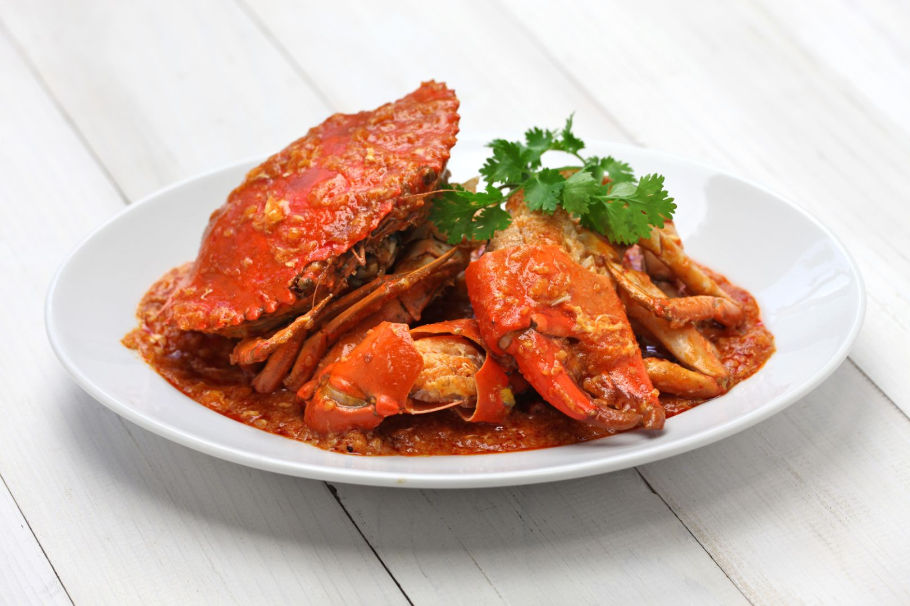
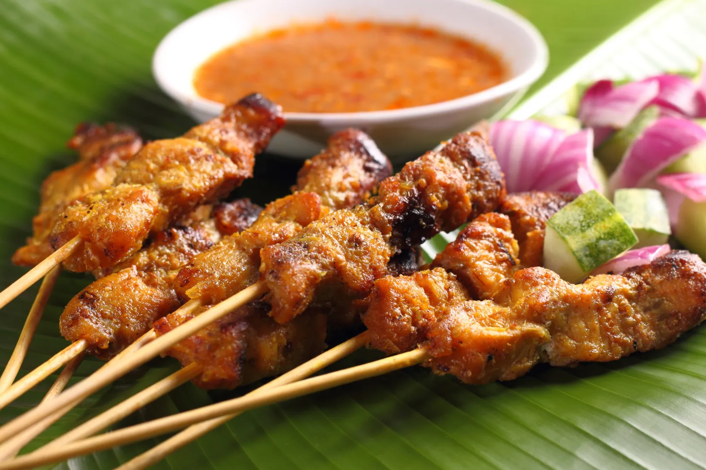
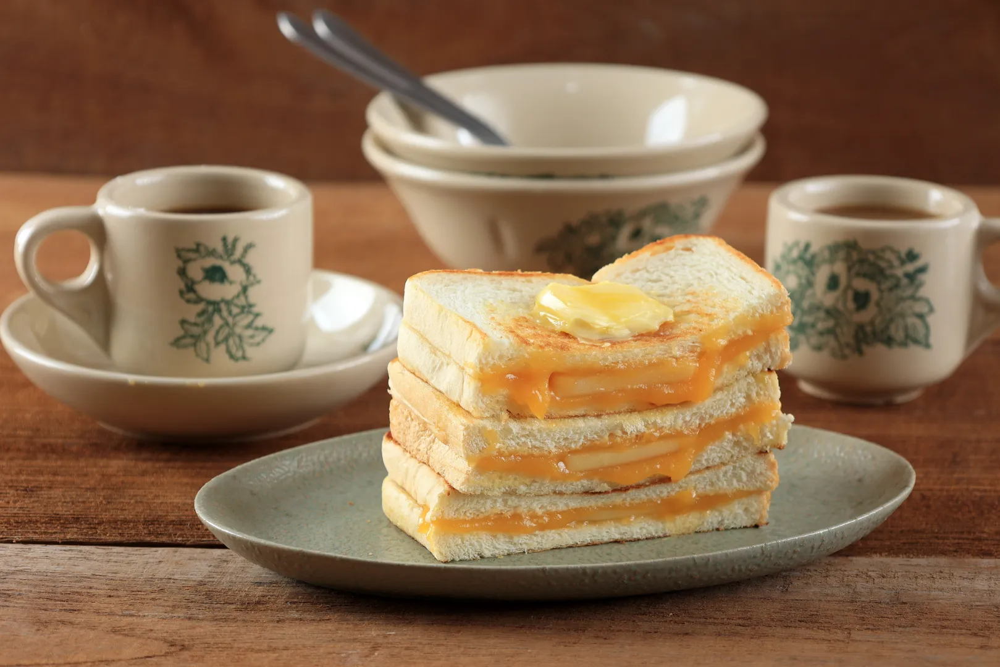

"Nobody in Singapore drinks Singapore Slings. It's one of the first things you find out there. What you do in Singapore is eat. It's a really food-crazy culture, where all of this great food is available in a kind of hawker-stand environment".
- Anthony Bourdain
Must try dishes




